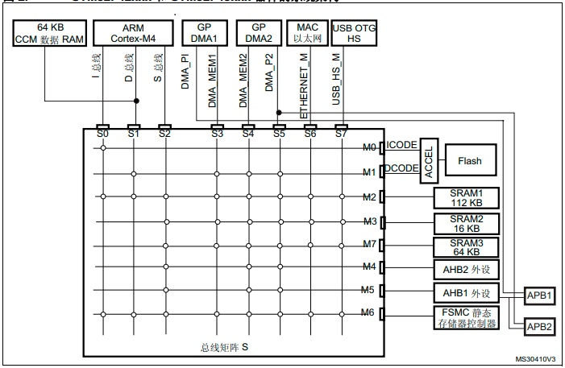
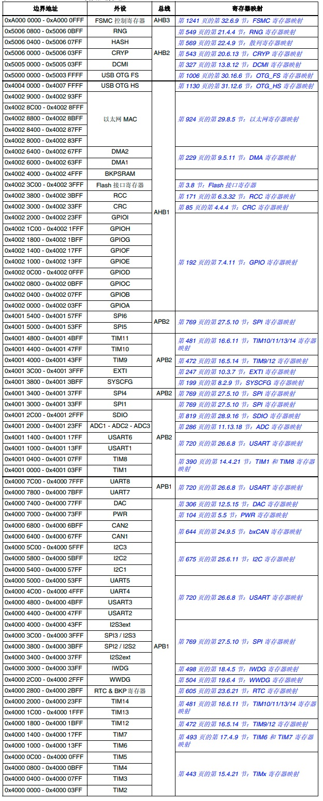
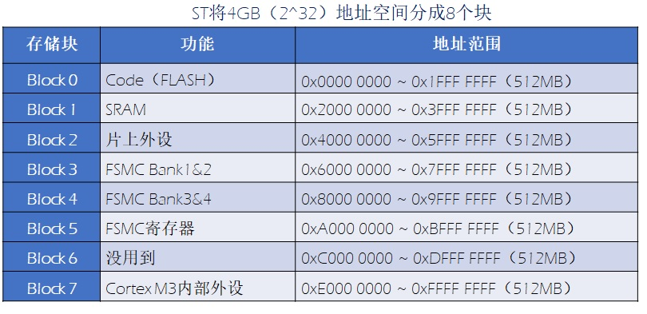
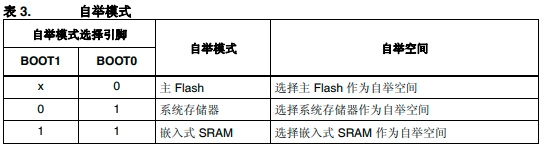
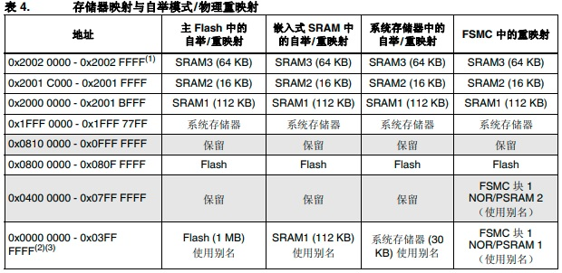
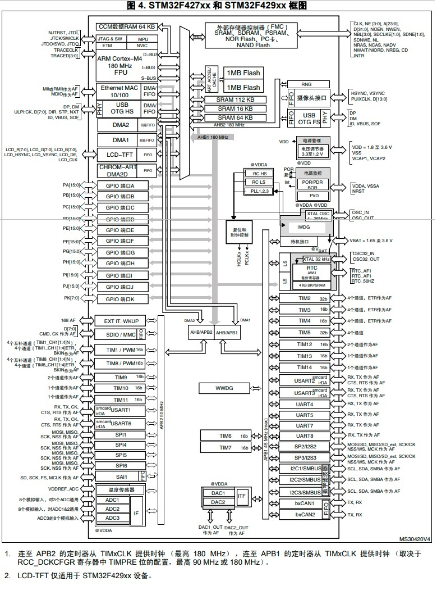

系统架构
主系统由 32 位多层 AHB 总线矩阵构成，可实现以下部分的互连：
● 八条主控总线：
— Cortex™-M4F 内核 I 总线、D 总线和 S 总线
— DMA1 存储器总线
— DMA2 存储器总线
— DMA2 外设总线
— 以太网 DMA 总线
— USB OTG HS DMA 总线
● 七条被控总线：
— 内部 Flash ICode 总线
— 内部 Flash DCode 总线
— 主要内部 SRAM1 (112 KB)
— 辅助内部 SRAM2 (16 KB)
— 辅助内部 SRAM3 (64 KB)（仅适用于 STM32F42xxx 和 STM32F43xxx 器件）
— AHB1 外设（包括 AHB-APB 总线桥和 APB 外设）
— AHB2 外设
— FSMC

● S0：I 总线
此总线用于将 Cortex™-M4F 内核的指令总线连接到总线矩阵。内核通过此总线获取指令。此总线访问的对象是包含代码的存储器（内部 Flash/SRAM 或通过 FSMC 的外部存储器）。
● S1：D 总线
此总线用于将 Cortex™-M4F 数据总线和 64 KB CCM 数据 RAM 连接到总线矩阵。内核通过此总线进行立即数加载和调试访问。此总线访问的对象是包含代码或数据的存储器（内部 Flash 或通过 FSMC 的外部存储器）。
● S2：S 总线
此总线用于将 Cortex™-M4F 内核的系统总线连接到总线矩阵。此总线用于访问位于外设或 SRAM 中的数据。也可通过此总线获取指令（效率低于 ICode）。此总线访问的对象是 112 KB、64 KB 和 16 KB 的内部 SRAM、包括 APB 外设在内的 AHB1 外设、AHB2 外设以及通过 FSMC 的外部存储器。
● S3、S4：DMA 存储器总线
此总线用于将 DMA 存储器总线主接口连接到总线矩阵。DMA 通过此总线来执行存储器数据的传入和传出。此总线访问的对象是数据存储器：内部 SRAM（112 KB、64 KB、16 KB）以及通过 FSMC 的外部存储器。
● S5：DMA 外设总线
此总线用于将 DMA 外设主总线接口连接到总线矩阵。DMA 通过此总线访问 AHB 外设或执行存储器间的数据传输。此总线访问的对象是 AHB 和 APB 外设以及数据存储器：内部 SRAM 以及通过 FSMC 的外部存储器。
● S6：以太网 DMA 总线
此总线用于将以太网 DMA 主接口连接到总线矩阵。以太网 DMA 通过此总线向存储器存取数据。此总线访问的对象是数据存储器：内部 SRAM（112 KB、64 KB 和 16 KB）以及通过 FSMC 的外部存储器。
● S7：USB OTG HS DMA 总线
此总线用于将 USB OTG HS DMA 主接口连接到总线矩阵。USB OTG DMA 通过此总线向存储器加载/存储数据。此总线访问的对象是数据存储器：内部 SRAM（112 KB、64 KB 和 16 KB）以及通过 FSMC 的外部存储器。
● 总线矩阵
总线矩阵用于主控总线之间的访问仲裁管理。仲裁采用循环调度算法。
● AHB/APB 总线桥（APB）
借助两个 AHB/APB 总线桥 APB1 和 APB2，可在 AHB 总线与两个 APB 总线之间实现完全同步的连接，从而灵活选择外设频率。有关 APB1 和 APB2 最大频率的详细信息，请参见器件数据手册；有关 AHB 和 APB 外设地址映射的信息。每次芯片复位后，所有外设时钟都被关闭（SRAM 和 Flash 接口除外）。使用外设前，必须在 RCC_AHBxENR 或 RCC_APBxENR 寄存器中使能其时钟。
存储器
● 存储器组织结构
程序存储器、数据存储器、寄存器和 I/O 端口排列在同一个顺序的 4 GB 地址空间内。
各字节按小端格式在存储器中编码。字中编号最低的字节被视为该字的最低有效字节，而编号最高的字节被视为最高有效字节。
有关外设寄存器映射的详细信息，请参见相关章节。
可寻址的存储空间分为 8 个主要块，每个块为 512 MB。
未分配给片上存储器和外设的所有存储区域均视为“保留区”。请参见产品数据手册中的存储器映射图。
● 存储器映射
有关综合存储器映射图，请参见相应器件的数据手册。表 2 提供了所有 STM32F4xx 器件中可用外设的边界地址。


● 嵌入式 SRAM
STM32F405xx/07xx 和 STM32F415xx/17xx 带有 4 KB 备份 SRAM 和 192 KB 系统 SRAM。STM32F42xxx 和 STM32F43xxx 带有 4 KB 备份 SRAM 和 256 KB 系统 SRAM。
系统 SRAM 可按字节、半字（16 位）或全字（32 位）访问。读写操作以 CPU 速度执行，且等待周期为 0。系统 SRAM 分为三个块：
— 映射在地址 0x2000 0000 的 112 KB 和 16 KB 块，可供所有 AHB 主控总线访问。
— 映射在地址 0x2002 0000 的 64 KB 块，可供所有 AHB 主控总线访问（适用于 STM32F42xxx 和 STM32F43xxx）。AHB 主总线支持并发 SRAM 访问（通过以太网或 USB OTG HS）：例如，当 CPU 对 112 KB 或 64 KB SRAM 进行读/写操作时，以太网 MAC 可以同时对 16 KB SRAM 进行读/写操作。
— 在地址 0x1000 0000 映射的 64 KB 块，只能供 CPU 通过数据总线访问。
如果选择从 SRAM 自举或选择物理重映射（SYSCFG 控制器中的 SYSCFG 存储器重映射寄存器 SYSCFG_MEMRMP），则 CPU 可通过系统总线或 I-Code/D-Code 总线访问系统 SRAM。要在 SRAM 执行期间获得最佳的性能，应选择物理重映射（通过自举管脚及软件配置来选择）。
● Flash 概述
Flash 接口可管理 CPU 通过 AHB I-Code 和 D-Code 对 Flash 进行的访问。该接口可针对 Flash 执行擦除和编程操作，并实施读写保护机制。Flash 接口通过指令预取和缓存机制加速代码执行。Flash 结构如下：
— 主存储器块分为多个扇区。
— 系统存储器，器件在系统存储器自举模式下从该存储器启动。
— 512 OTP（一次性可编程）字节，用于存储用户数据。
— 选项字节，用于配置读写保护、BOR 级别、软件/硬件看门狗以及器件处于待机或停止模式下的复位。
● 位段
Cortex™-M4F 存储器映射包括两个位段区域。这些区域将存储器别名区域中的每个字映射到存储器位段区域中的相应位。在别名区域写入字时，相当于对位段区域的目标位执行读-修改-写操作。
在 STM32F4xx 器件中，外设寄存器和 SRAM 均映射到一个位段区域，这样可实现单个位段的读写操作。这些操作仅适用于 Cortex™-M4F 访问，对于其它总线主接口（如 DMA）无效。可通过一个映射公式说明别名区域中的每个字与位段区域中各个位之间的对应关系。映射公式为：
bit_word_addr = bit_band_base + (byte_offset × 32) + (bit_number × 4)
— bit_word_addr 代表别名区域中将映射到目标位的字的地址
— bit_band_base 代表别名区域的起始地址
— byte_offset 代表目标位所在位段区域中的字节编号
— bit_number 代表目标位的位位置 (0-7)
示例：下例说明如何将 SRAM 地址 0x20000300 处字节的位 2 映射到别名区域：
— 0x22006008 = 0x22000000 + (0x300 × 32) + (2 × 4)
— 对地址 0x22006008 执行写操作相当于在 SRAM 地址 0x20000300 处字节的位 2 执行读-修改-写操作。
— 对地址 0x22006008 执行读操作将返回 SRAM 地址 0x20000300 处字节的位 2 的值（0x01 表示位置位，0x00 表示位复位）。
自举配置
存储器采用固定的存储器映射，代码区域起始地址为 0x0000 0000（通过 ICode/DCode 总线访问），而数据区域起始地址为 0x2000 0000（通过系统总线访问）。Cortex™-M4F CPU 始终通过 ICode 总线获取复位向量，这意味着只有代码区域（通常为 Flash）可以提供自举空间。STM32F4xx 微控制器实施一种特殊机制，可以从其它存储器（如内部 SRAM）进行自举。
在 STM32F4xx 中，可通过 BOOT[1:0] 引脚选择三种不同的自举模式，如表 3 所示。

复位后，在 SYSCLK 的第四个上升沿锁存 BOOT 引脚的值。复位后，用户可以通过设置 BOOT1 和 BOOT0 引脚来选择需要的自举模式。
BOOT0 为专用引脚，而 BOOT1 则与 GPIO 引脚共用。一旦完成对 BOOT1 的采样，相应 GPIO 引脚即进入空闲状态，可用于其它用途。
器件退出待机模式时，还会对 BOOT 引脚重新采样。因此，当器件处于待机模式时，这些引脚必须保持所需的自举模式配置。这样的启动延迟结束后，CPU 将从地址 0x0000 0000 获取栈顶值，然后从始于 0x0000 0004 的自举存储器开始执行代码。
● 嵌入式自举程序
嵌入式自举程序模式用于通过以下串行接口重新编程 Flash：
— USART1（PA9/PA10）
— USART3（PB10/11 和 PC10/11）
— CAN2（PB5/13）
— USB OTG FS（PA11/12）从设备模式（DFU：器件固件升级）
USART 外设以内部 16 MHz 振荡器 (HSI) 频率运行，而 CAN 和 USB OTG FS 则需要相当于 1 MHz 数倍（4 MHz 到 26 MHz 之间）的外部时钟 (HSE) 频率。
嵌入式自举程序代码位于系统存储器中，在芯片生产期间由 ST 编程。有关详细信息，请参见应用笔记 AN2606。
● 物理重映射
选择自举引脚后，应用程序软件可以将某些存储器设定为从代码空间进行访问（这样，可通过 ICode 总线而非系统总线执行代码）。这样的修改通过在 SYSCFG 控制器中编程 SYSCFG 存储器重映射寄存器 (SYSCFG_MEMRMP) 来实现。
因此可重映射以下存储器：
— 主 Flash
— 系统存储器
— 嵌入式 SRAM1 (112 KB)
— FSMC 块 1（NOR/PSRAM 1 和 2）

示例
